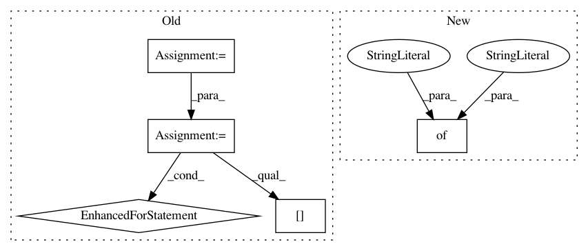

3007e9a06ceeea9d3e1cc1b02adf67ab28d8adda,mimic3models/common_utils.py,DeepSupervisionDataLoader,__init__,#DeepSupervisionDataLoader#Any#Any#Any#,113
Before Change
self._data = [(x, float(t), y) for (x, t, y) in self._data]
self._data = sorted(self._data)
mas = []
i = 0
while i < len(self._data):
j = i
cur_stay = self._data[i][0]
cur_positions = []
cur_labels = []
while j < len(self._data) and self._data[j][0] == cur_stay:
cur_positions.append(self._data[j][1])
cur_labels.append(self._data[j][2])
j += 1
i = j
mas.append([cur_stay, cur_positions, cur_labels])
self._data = mas
if small_part:
self._data = self._data[:256]
mas = []
for (stay, positions, labels) in self._data:
X, header = self._read_timeseries(stay)
mas.append([X, positions, labels])
self._data = mas
def _read_timeseries(self, ts_filename):
ret = []
After Change
self._data = [(x, float(t), y) for (x, t, y) in self._data]
self._data = sorted(self._data)
mas = {"X": [],
"ts": [],
"ys": [],
"name": []}
i = 0
while i < len(self._data):
j = i
cur_stay = self._data[i][0]
In pattern: SUPERPATTERN
Frequency: 3
Non-data size: 5
Instances
Project Name: YerevaNN/mimic3-benchmarks
Commit Name: 3007e9a06ceeea9d3e1cc1b02adf67ab28d8adda
Time: 2018-01-17
Author: harhro@gmail.com
File Name: mimic3models/common_utils.py
Class Name: DeepSupervisionDataLoader
Method Name: __init__
Project Name: rail-berkeley/softlearning
Commit Name: 9634be247a33280cfc60b439e6cb61147bd79f56
Time: 2018-01-29
Author: haarnoja@berkeley.edu
File Name: softqlearning/misc/sampler.py
Class Name:
Method Name: rollout
Project Name: rail-berkeley/softlearning
Commit Name: a55f9be217b2320cec7c7dc44a8245496f851af5
Time: 2019-06-01
Author: hartikainen@berkeley.edu
File Name: softlearning/misc/utils.py
Class Name:
Method Name: save_video